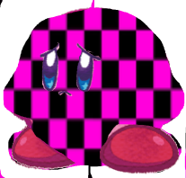

The bulk of what I enjoy seems to be RPGs these days. (RPG is short for Role-Playing Game in case you did not know.) I enjoy this genre mainly because despite how simple the gameplay can be to someone besides myself, I know that the games I play tell very elaborate stories with this format. Examples of a few are classics such as Earthbound by Nintendo and indie hits such as Undertale.
Earthbound may not change the RPG formula too much besides something often referred to as rolling health, but it is a good game. The rolling health is a system where even if a hit should have defeated your party members, as long as you can heal before the hp rolls down to 0, you can recover from the damage. It essentially adds some reaction time and prompting to be aware of various circumstances as you play. The game also tells a rather whimsical story with moments and dialogue that most describe as being very quirky in nature. Earthbound is usually regarded as an hidden gem of a classic because of the fact that it is a SNES game that went relatively under the radar upon release due to other games at the time such as Chrono Trigger. The inclusion of the game's protagonist Ness in the other Nintendo IP Super Smash Bros. got people to learn about the game some time after launch and rekindled a love for the game.
Undertale changes the RPG formula mainly due to its combat system in which you are able to dodge oncoming enemy attacks in the form of multiple "bullet" patterns. Furthermore, the game has a a different approach to gameplay with the player being encouraged to be a pacifist towards every enemy as opposed to fighting every enemy. This pacifist system is acted at by the player being encouraged to do various "ACTS" towards enemies to befriend them and then spare them. With every enemy in the game the pattern of attack varies and the means to pacify varies. This game is also rather silly at times with quirky writing but can get very serious at times.
Other genre's I enjoy include the FPS (First Person Shooter) genre. A couple games in particular are games such as the ever popular trend setter's of FPS by ID such as DOOM and/or a variety of others.
DOOM is a game usually regarded as being the father of the FPS genre. The reason for this is because of how it improved on its predecessor manyfold and set a good amount of things that most FPS games around its time tried replicating, earning them the moniker of "DOOM-Clones" due to seeming to want to hit the same success as DOOM. DOOM is effectively just shoot things (demons in particular) until they die, no questions asked. Your name?: Not important. Why you're here?: Also not important. Here's some weapons, go kill some demons. That is the appeal of DOOM I suppose, the fact that it is more or less just instant action no need for a real reason behind it.
Eventually there are games such as the Half-Life Series. This series is a bit more linear than DOOM but it capitalizes on where DOOM passed on. Your name?: Gordon Freeman (in most of the games). Why you're here?: Maybe you are late for work, or maybe you are "the right man in the wrong place" according to a weird man only known as the GMan. You have your trusty crowbar and some other weapons, survive whatever is going on and maybe find out more about the world while you are at it. Half-Life is different than DOOM in that it tells a story, both subtly with info you can find lying around and learn about from NPCs and/or more in your face things such as exposition from the mysterious GMan.
Garry's Mod (often shortened to GMod) is a a game that has multiple modes available but is primarily on its own a sandbox game that is a mod of the earlier mentioned Half-Life series. There is not much I can say about this game other than how there are various things to do and how weird it can get.
Minecraft is a game with various modes (less than GMod for sure but still multiple) such as Survival and Creative. Creative is amode where you can let your imagination flow and build various structures or art with an infinite supply of blocks and supplies. Survival still lets you build, but you have to survive the hostile mobs in the world with the goal being rather unclear as there is an "end goal" of defeating a certain boss to "beat" the game even though at the end of the day your main goal is to just not die.
Below is an image of Kirby as if he were missing textures needed for GMod as it is made in an engine called Source and stuff like this happens when files such as textures are missing.
